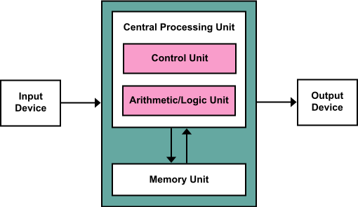
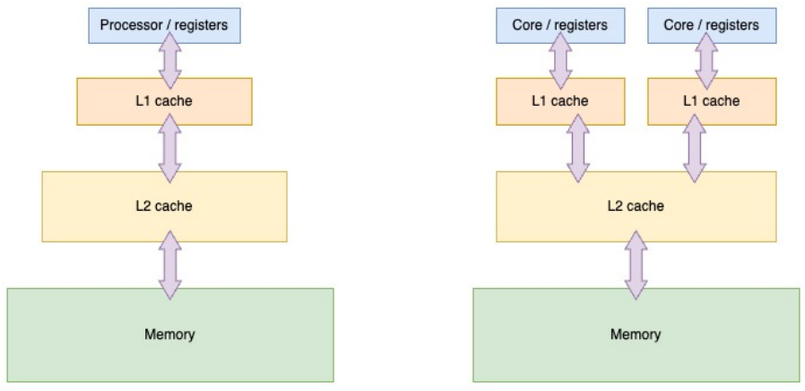
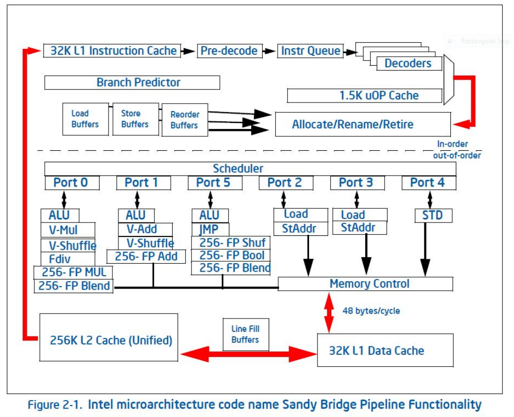

20260929 Parallel Computing Hardware¶
Up till now, we’ve stuck with the von Neumann Architecture:

We’ve discussed where how the CPU acts like the von Neumann machine, but lies in subtle ways to make it faster.
So far, we’ve viewed multi-core processors as a basic extension of the von Neumann model
Just increase the number of CPUs
All CPUs have access to the same memory

From Eijhout’s Art of HPC Vol 1
Still a single memory pool for all cores
Each core has some private cache and shared cache
Shared cache may either by L2 or L3, depends on the hardware
Private caches cause cache coherency problems which must be addressed
There are other modern CPU features which have performance consequences for parallel programs
Simultaneous multithreading (SMT)¶
Modern CPUs have a huge array of capabilities
ILP
Out-of-order execution
branch prediction
Most “normal” applications have a lot of “downtime”
Waiting on a download from the internet
Waiting for user interaction (think browser)
Waiting for file to be read or saved to harddrive
This keeps the instructions-per-clock (IPC) relatively low
To keep the CPU busy, we want to CPU to be able to saturate as much of the CPU hardware as possible
Keep instructions flowing into the fetch-decode-execute pipeline
Keep \(\mu\)ops running on as many ports as possible

Solution: Simultaneous Multithreading (SMT)¶
SMT (better known by Intel’s branding “Hyperthreading”) allows multiple proceseses (threads) to be assigned to the same physical core
Fetch-decode occurs on both threads at the same time
\(\mu\)ops from either fight over same resources (ports)

Ports (“execution units”) on each row
Different colored blocks are different threads
Modern “normal” processors limit SMT to 2 threads per core
IBM power has up to 8 on their POWER[8,9,10] CPU architecture
SMT, HPC, and you¶
What applications benefit from SMT?
Lots of random memory load/store operations
e.g. memory-latency bound, not memory-bandwidth bound
Significant external I/O bound
e.g. reading/writing to harddrive or network
Any other significant “downtime” which wouldn’t affect another process
If thread is stalled because of resource X, another process needing resource X will not go faster
If a thread is memory-bandwidth bound, adding another process doesn’t alleviate the bandwidth limitation
Which applications don’t benefit from SMT?
Memory-bandwidth bound
Compute-bound
Remember, the whole point of SMT: if there are resources on the CPU that aren’t being used, we interleave another thread’s instructions into it
Thus, if we’re using the resources, SMT is simply extra overhead
Branch prediction memory gets overwritten, data loads/stores contend with each other, etc
Also note, SMT threads are contending over the same shared cache
For most HPC applications, you shouldn’t need SMT
Ideally, you’ll be memory-bandwidth or compute bound
Most scientific HPC applications don’t have the characteristics
It’s not uncommon for HPC centers to disable SMT by default for their systems
Counter example, sparse matrix assembly can have enough “random” read/write to have SMT win out
PHASTA (Ken Jansen’s CFD code in Aero) found better performance running 4 processes per core on IBM Bluegene-Q system
This was down to the the relatively random read/writes from sparse matrix assembly
Unique machine (ALCF’s Mira) played a signficiant part in that tradeoff
Similar results were not observed for other systems
Aside: Nomenclature¶
There a lot of overlapping nomenclature when it comes to describing CPU vs core vs processor. Here’s a short disambiguation.
Name |
Description |
|---|---|
Physical Chip |
Actual hardware that is plugged into a computer |
Physical Core |
Physical collection of transistors which has the registers, ALU, fetch-decode-execute capabilities |
Logical Core |
Virtual “slot” on a Physical Core that an OS may assign a process to, enables simultaneous multi-threading |
Other common terms used and what they (can) refer to
Name |
Physical Chip |
Physical Core |
Logical Core |
|---|---|---|---|
CPU |
x |
x |
x |
Processor |
x |
x |
x |
Core |
x |
x |
|
Hardware Core |
x |
||
Software Core |
x |
||
Socket |
x |
||
Package |
x |
||
Die |
part of |
The term “process” and “thread” are often interchangable and are effectively identical to the CPU
We’ll talk more about the disambiguation there later
Non-Uniform Memory Access (NUMA)¶
Problem: Memory speeds directly proportional to the distance between memory and the CPU

For multi-socket machines, we’d have to slow memory down to have the memory access work correctly
This would be uniform memory access (UMA)
Solution: Have each socket control it’s own memory
Other socket’s memory still addressable, but it just takes longer
Modern day processors often have NUMA nodes within their own packages
Comes from having the memory controller on the package itself


Dual socket machine
“DRAM” within each “Group 0” is a NUMA node
Total of 8 NUMA nodes
Side note: check out collection of “cool” ``lstopo` diagrams <*https://www.open-mpi.org/projects/hwloc/lstopo/>`__
NUMA Complications¶
NUMA places penalties on latency and (sometimes) bandwidth
Latency: CPU has to request memory from another CPU
 From Chips and Cheese
From Chips and Cheese
Here, the same 4-die structure means different latency depending on which specific NUMA node
Data has to hop between two different EMID interfaces
Bandwidth: Memory controller has to feed current NUMA node and other NUMA nodes
Cross NUMA node traffic hurts
Doesn’t always hurt, depends on ratio of inter-NUMA-node bandwidth to memory-bandwidth
Inter-NUMA-node bandwidth is really fast these days
Cache coherency is harder for inter-NUMA-node shared memory, especially over multiple sockets
L3 cache sometimes consistent across NUMA nodes, sometimes not
Modern CPUs try and be smart about this, but not guaranteed
NUMA, HPC, and you!¶
Clearly, very important to keep track of the relationship between processes/threads placement and data placement with respect to NUMA nodes.
Want them to be collocated when possible (data accessed by thread is on the same NUMA node as the thread itself)
How do we control this?
Thread-placement: Pinning/binding and affinity¶
OS is in charge of assigning threads/processes to CPU cores
Ordinarily, it’ll do this on some generic scheduler
This is similar for CPUs with performance and efficiency cores; OS decides where processes go
OS generic scheduler will often move processes around the CPU
We can tell the OS where to place processes and threads
Affinity: where an OS can place threads
Pinning/binding: Tell the OS to not move a process between different cores
These can be done either through OS-level constructs (e.g. taskset for Linux) or through other specific means
numactlis a Linux, NUMA-specific way of setting processor affinity and memory allocation settingsOpenMP uses
OMP_PLACESandOMP_PROC_BINDenvironment variables to control affinity and binding, respectivelyMPI (to be discussed later) is implementation specific, but is normally command line flags to
mpirun
Data placement¶
When requesting dyanmic memory, default strategy (in Linux) is to place data in the same NUMA node as the thread which first touched it.
Thus, the initial placement of the threads pretty much ensures that the threads and it’s data are collocated
More stringent settings can be set with
numactlIt can round-robin distribute data across NUMA nodes
Strictly enforce specific NUMA node placement (“only allocate memory on NUMA node 1”)
How to place threads w/rt NUMA?¶
Two basic strategies
Spread processes around evenly between NUMA nodes
Concentrate processes on the same NUMA node
Spreading them evenly around NUMA nodes:
Ensures maximum potential memory bandwidth
Particularly true around different packages (multi-socket nodes), but also true with multi-die setups (or multi-memory controllers)
Maximizes available cache (if that makes a difference, may not depending on hardware)
Or maximizes available “fast” memory (e.g. on package HBM)
This is probably what you want to do 99% of the time
Concentrate threads on the same NUMA node:
Is better for low-latency shared memory access
If latency of accessing the shared memory is the primary concern
As before with SMT, this is generally not true of scientific HPC applications, but there will of course be exceptions
Dynamic memory and NUMA¶
When requesting dynamic memory (e.g.
malloc), the physical location of the memory is not yet determinedThe physical location is normally determined by a “first touch” policy
The physical memory is placed on the NUMA node for whichever process touches the memory first
double *array = malloc(N*sizeof(double));
for (int i=0; i<N; ++i)
array[i] = 1;
#pragma omp parallel for
for (int i=0; i<N; ++i)
// .... lots of work on array[i] ...
Primary thread allocates and initializes memory
Then multiple threads work on the array
The issue:
The memory is now all allocated to the NUMA node of the first thread
The other threads may cross NUMA boundaries to access
arrayCache coherency now must take place over NUMA boundaries as well
Solution¶
Ensure that the memory is placed in the thread-specific NUMA node:
double *array = malloc(N*sizeof(double));
#pragma omp parallel for
for (int i=0; i<N; ++i)
array[i] = 1;
#pragma omp parallel for
for (int i=0; i<N; ++i)
// .... lots of work on array[i] ...
or
double *array = malloc(N*sizeof(double));
#pragma omp parallel for
for (int i=0; i<N; ++i)
array[i] = 1;
// .... lots of work on array[i] ...
NUMA Resources:
NUMA (Non-Uniform Memory Access): An Overview by Christoph Lameter